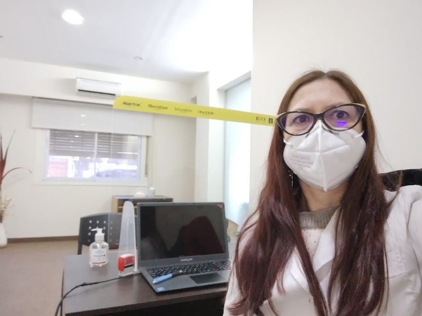
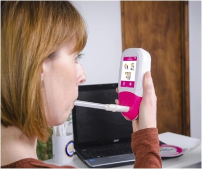
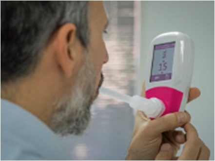
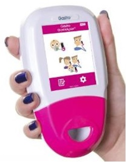
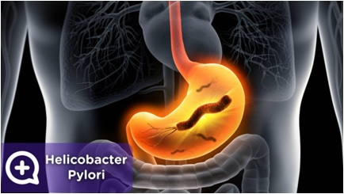
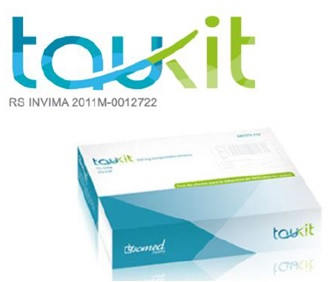
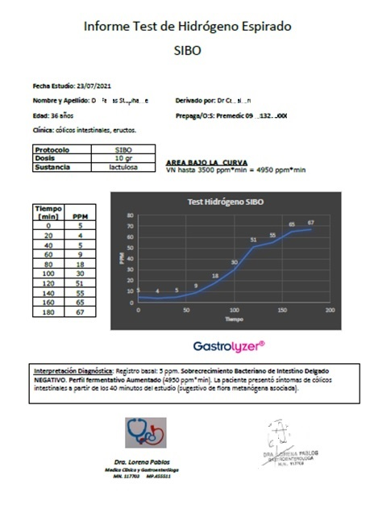

Estudios Funcionales Digestivos
Test de Hidrógeno en Aire Espirado
- Test no invasivo, seguro, ambulatorio, de fácil realización
- Con buena tolerancia por parte del paciente.
- Se utiliza el monitor de hidrógeno Gastrolyzer de Bedfont
- Material con boquilla descartable.


- Sobrecrecimiento bacteriano (SIBO)
- Intolerancias:
- Lactosa
- Xilitol
- Sorbitol
- Xilosa
- Fructosa


Test para detección de
Helicobacter pylori
- Test no invasivo, seguro, ambulatorio, utilizable incluso en niños a
partir de los 5 años de edad y mujeres embarazadas.
- Realizado con Urea marcada con carbono 13. 100% Apto para
consumo humano.
- El Kit que se utiliza (TAU KIT) posee certificado de Anmat para su
comercialización.
- La eficacia del test para detectar la bacteria es superior a la
biopsia
gástrica y otros test de screening.


Modo de Presentación:
- Sustratos utilizados
- Material descartable para la realización del mismo.
- Informe médico con interpretación diagnostica.
